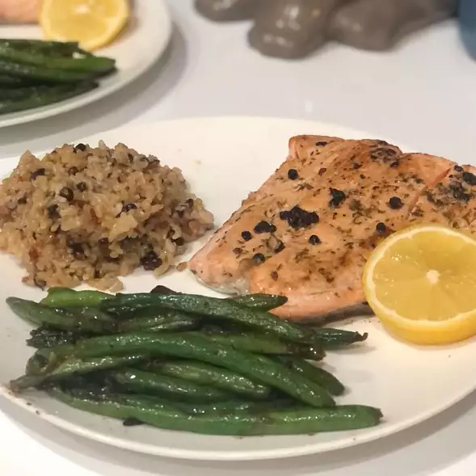

Odin Recipes
Easy Lemon-Pepper Blackened Salmon

This delicious blackened salmon fillet is infused with lemon, It's a quick
and easy recipe the whole family will love!
- Prep: 10 mins
- Cook: 11 mins
- Total: 21 mins
- Servings: 4
- Yield: 4 Servings
Ingredients
- 2 tablespoons butter, melted
- 2 tablespoons fresh lemon juice
- 1 tablespoon chopped fresh parsley
- 1/2 teaspoon garlic powder
- salt and ground black pepper to taste
- 4 salmon fillets
- 2 tablespoons olive oil